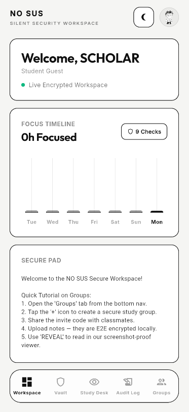
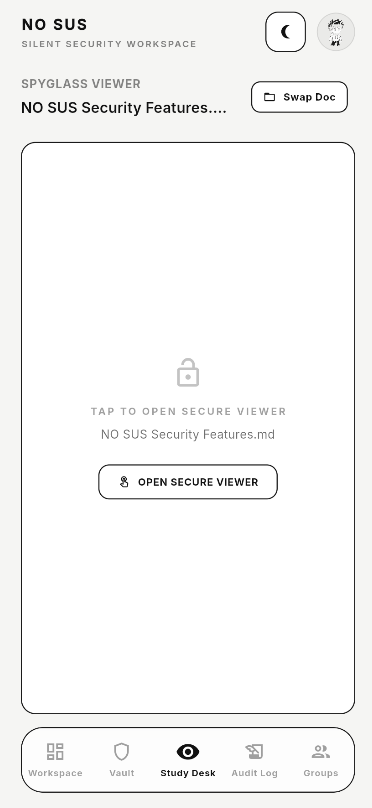
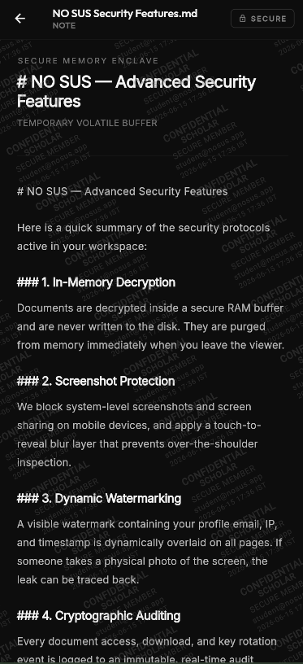
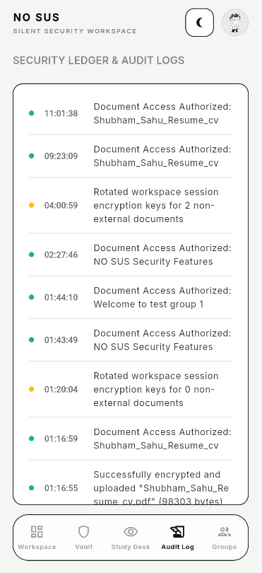

WHAT HAPPENS AFTER YOU PRESS SEND?
You can send a sensitive document in seconds. But what do you know after you send it?
WHO OPENED IT?
WHEN?
THE RIGHT PERSON?
WHAT HAPPENED NEXT?
STORAGE IS SOLVED.
But what happens after sharing?
THE LAYER BETWEEN
SENDANDLEAK
UPLOAD
A document enters the workspace.




SENDHOPE
SENDIDENTIFYVIEWTRACK
A FILE SHOULD NOT BECOME ANONYMOUS THE MOMENT IT IS SHARED
NOT A CONCEPT. IT’S LIVE.
- WORKING ANDROID APP
- WORKING WEB APP
- TRACKED SHARING
- RECIPIENT BROWSER FLOW
- nosus.foo · app.nosus.foo
That made us ask a bigger question.
WHAT IF A DOCUMENT HAD AN IDENTITY?
DOCUMENT PASSPORT FUTURE
- CREATED
- MODIFIED
- SHARED
- VIEWED
- DOWNLOADED
- TRANSFORMED
- CURRENT PROVENANCE
Today is the first layer. The rest is the direction.
AND THEN AI ARRIVED.
WHO IS ALLOWED TO READ IT?
WHO IS ALLOWED TO ACT ON IT?
We know who opened your document.
BUT KNOWING WHO OPENED A DOCUMENT ISN’T ENOUGH ANYMORE.
What happens when the thing opening your document isn’t a person?
NO SUS NEXT · FUTURE ARCHITECTURE
DON’T GIVE AI YOUR DOCUMENT. GIVE IT A CAPABILITY
NO SUS PRIVATE AI CONCEPT
- ALLOWED
- ✓ Check for PII
- ✓ Answer predefined questions
- DENIED
- ✕ Download
- ✕ Export
- ✕ Unrestricted access
Potential personally identifiable information detected.
RAW DOCUMENT NOT DISCLOSEDAI PERMISSION EXPIRED
- Document shared
- AI Agent authorized
- Privacy check executed
- Result returned
- Permission expired
The passport now has to hold more than a person.
NOT ONLY WHO OPENED IT. WHAT WAS ALLOWED.
DOCUMENT PASSPORT FUTURE
- CREATED
- SHARED
- HUMAN ACCESSED
- AI AGENT AUTHORIZED
- SPECIFIC OPERATION EXECUTED
- RESULT GENERATED
- PERMISSION REVOKED
FUTURE ARCHITECTURE
NO SUS
POLICY + IDENTITY + AUDITPRIVACY LAYER
AI / AGENT
VERIFIED RESULT
Confidential Computing · MPC · Zero-Knowledge Proofs · Midnight · Privacy-Preserving AI
Enabling technologies. NO SUS is the product: the permission and accountability layer.
TRADITIONAL FILE SHARINGSENDHOPE
EXISTING AI WORKFLOWUPLOADAI GETS DATA
NO SUSSHARECONTROLPROCESSVERIFY
WE ARE NOT MORE ENCRYPTED.
NO SUS GIVES INFORMATION PERMISSIONS,
NOT JUST LINKS.
START NARROW. EXPAND NATURALLY.
- UNIVERSITIES
- RESEARCH
- PROFESSIONAL SERVICES
- BUSINESS
FREEPROTEAMORGANIZATION
Storage
Collaboration
Access
Identity-aware sharing
Watermarked viewing
Document activity
Controlled external access
WE ARE NOT REPLACING STORAGE. WE ARE BUILDING THE ACCOUNTABILITY LAYER AROUND SHARING.
SHUBHAM SAHU
FOUNDER · PRODUCT & ENGINEERING
15 DAYS. SOLO.
IDEA → DESIGN → CODE → BACKEND → ANDROID → WEB → DEPLOYMENT
AI made building software faster.
It didn’t make building the right thing easy.
I am looking for the people who can help take this from something I built alone into something people actually need.
Software is becoming easier to build. Execution, product judgment, distribution and persistence are becoming more important.